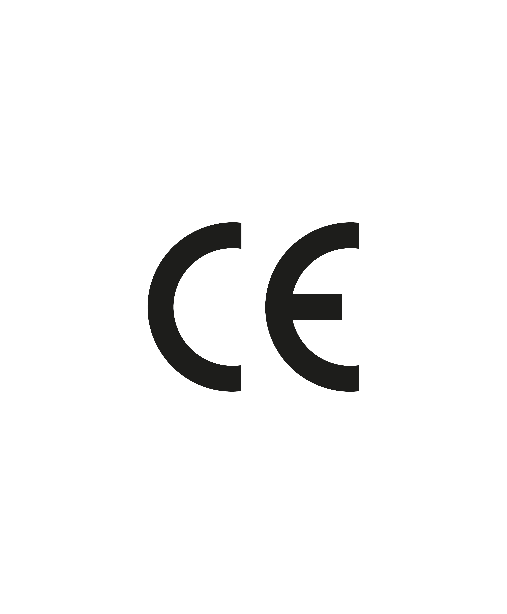
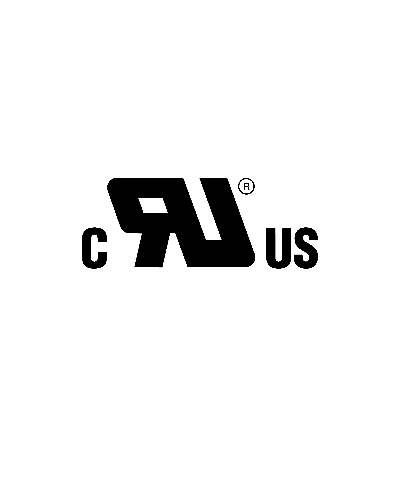

Product labeling includes symbols, marks, and data that the manufacturer applies directly to the product itself, to the packaging, or to accompanying informational materials. This labeling is typically standardized. Depending on the application, it may be applied using nameplates, labels, embossing, laser engraving, tags, or stamps. This labeling provides information about the product’s specific properties and technical characteristics, the place and date of manufacture, compliance with quality and safety standards, and relevant manufacturer information.
Product labeling on electronic devices is a key element of device safety, quality assurance, and traceability. It is applied directly to the device or its packaging in the form of durable type and rating plates, laser engravings, or special industrial labels. This labeling is often required by law and provides important technical data such as rated power, performance parameters, and protection classes. It also documents compliance with international quality and safety standards and ensures traceability through serial numbers.


Transport labeling on goods and packaging is a key element of logistics security, quality assurance, and traceability. It is applied directly to the shipping unit or packaging in the form of a durable shipping label, a hazardous materials sticker, or a specialized industrial label. This labeling is often required by law and provides important logistical data such as handling instructions, weight classes, and destinations. It also documents compliance with international transportation standards and ensures traceability through tracking numbers.